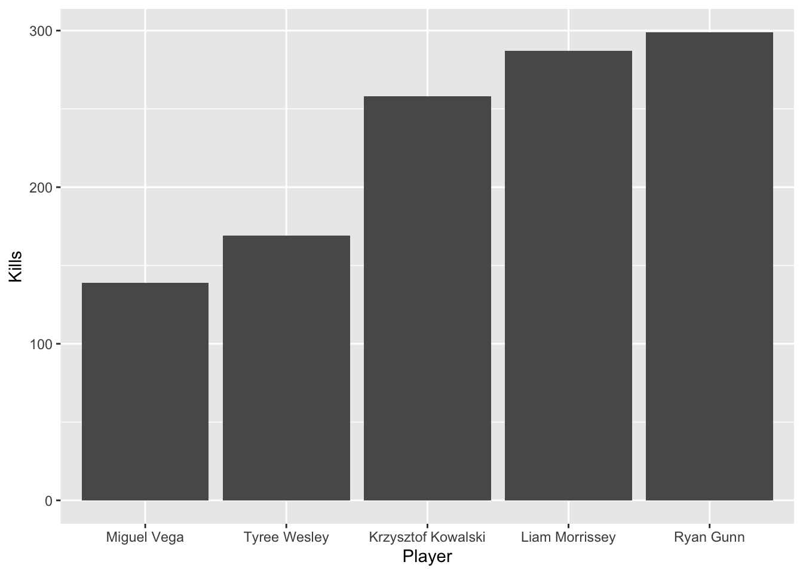

library(rvest)
library(ggplot2)
library(dplyr)
library(ggrepel)
library(stringr)
url <- "https://naiastats.prestosports.com/sports/mvball/2021-22/teams/georgetown"
tables <- url %>%
read_html() %>%
html_nodes("table")
seasonStats <- tables %>%
purrr::pluck(4) %>%
html_table()
gameLog <- tables %>%
purrr::pluck(12) %>%
html_table() Making Graphics with Data from the Web
First, we need to get all the needed packages needed, by using the library()-command. Then, we need to get the url for the NAIA stats website, in order to get all the tables from there with the data. The table with the season stats is the 4th one on the site and the game logs is the 12th one on there, this is how we know which ones to import in our r document.
To make a visualizion of the Top 5 people with the most kills in the season, we first need to modify the seasonStats table. This modified table is going to be called topKillers. The name, which is shown with many spaces in between first name and last name, needs to be properly shown which I did with the help of the mutate function to get rid of the unneccessary spaces. Then the table is arranged in descending order by the amount of kills, and only the name and the amount of kills is selected. Finally the table is limited to the top 5 entries with the head()-command.
topKillers <- seasonStats %>%
mutate(name= gsub("\\s+", " ", str_trim(Name))) %>%
arrange(desc(k)) %>%
select("name", "k") %>%
head(5) Next we need to make the plot from the topKillers table we created. To do so, we put the name on the x axis (had to reorder it by the number of kills, so it is in order) and the number of kills on the y-Axis. We used geom_col() to produce a bar chart with a different column for each player. Latsly, we add the axis titles “Name” and “Kills”.
killersGraphic <- topKillers %>%
ggplot(aes(x=reorder(name,k), y=k)) +
geom_col()+
labs(x="Player", y="Kills")
killersGraphic
The second visualization shall show the relationship of service aces and service errors from our team for each game of the season. We produce an “acesErrors”- graphic from the “gameLog”-table we pulled from the NAIA website. First, we need to get rid of the extra spaces in the name of the opponent team with the help of the mutate()-function. Next, we create a plot with with ggplot, where the serice aces are on the x-Axis and the service errors are on the y-Axis. Then we add geom_point() to show the points for eacch game and geom_text to label each point with the opponent’s team’s name. Lastly we add the labels “Serice Aces” for the x-Axis and “Service Errors” for the y-Axis.
acesErrors <- gameLog %>%
mutate(opponent= gsub("\\s+", " ", str_trim(Opponent))) %>%
ggplot(aes(x=sa,y=se))+
geom_point()+
geom_text_repel(aes(label=opponent),hjust=1, vjust=0)+
labs(x="Service Aces",y="Service Errors")
acesErrorsSources:
https://stackoverflow.com/questions/25707647/merge-multiple-spaces-to-single-space-remove-trailing-leading-spaces (get rid of extra spaces in the names)